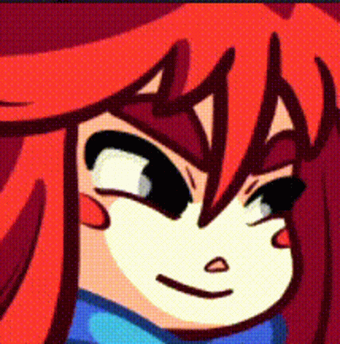

¡Bienvenidos!
Este es un sitio dedicado a un juego al que le tengo muchísimo cariño, que me ayudó en momentos muy difíciles y que,
aún a día de hoy, considero muy expecial. Para mí fue simplemente mágico, la combinación de jugabilidad, rejugabilidad,
música, dirección artística y amor lo hacen, en mi opinión, uno de los mejores juegos de la última década
¡Así que he decidido hacerle un sitio web!
¡Ponte cómod@, consigue un pay de fresa y disfruta del sitio!

¿Qué es Celeste?
Celeste es un videojuego perteneciente al género de plataformas creado por los desarrolladores de videojuegos
canadienses Maddy Thorson y Noel Berry. El videojuego fue creado originalmente como un prototipo en cuatro días
durante un game jam, y más tarde se expandió a un lanzamiento completo. Celeste se lanzó en enero de 2018 para
las plataformas Microsoft Windows, Nintendo Switch, PlayStation 4, Xbox One, macOS y GNU/Linux.
Sacado de Wikipedia
¿De qué trata?

El juego sigue a Madeline, una chica con depresión y ansiedad que decide escalar
la Montaña Celeste.
En su camino a la cima encontrará diversos retos. Desde enfrentarse a
bloques de hielo que caen, vientos despiadados o precipicios sin fin, hasta enfrentarse a sí misma.
Celeste es un plataformero bastante complicado, lo que complementa a la narrativa que presenta.
Mis Cosas Favoritas del Juego
- Los gráficos
- La música
- La Comunidad
Compuesta por Lena Raine, es una obra maestra que le va al juego como anillo al dedo.
Lena Raine logra capturar la magia de los lugares que Madeline visita en su viaje, así como los sentientos por los que que nuestra protagonista
va pasando a lo largo del camino. Se traduce de una forma exquisita la sencación de aventura, a la vez que de la incertidumbre que nuestro viaje
nos depara.
Mezclando sintetizadores con piano, encontramos piezas que van desde lo alegre y motivador hasta lo aterrador y lo misterioso, transcurriendo por un sinfín de paisajes
musicales.
¿Mi composición favorita? Es díficil de responder, pero Resurrections seguramente se encuentra en mi top, así como
Farewell. (Tremenda joya Farewell, solo quiero decir).

Para un mejor análisis de la música, recomiendo checar este sitio.
Celeste tiene una Comunidad PRECIOSA. Crean mods para expandir el juego, crean música, dibujo, arte...
Hay una parte que se dedica a intentar pasarse el juego lo más rápido posible, y el record ahorita mismo es de...
¡25 minutos, 24 segundos y 798 milisegundos por secureaccount!
Entre el arte que crean, los memes, los retos los grupos que comparten, la comunidad de Celeste es agradable :).
¡Consigue Celeste ahora mismo!
¡Gracias por visitar mi sitio!